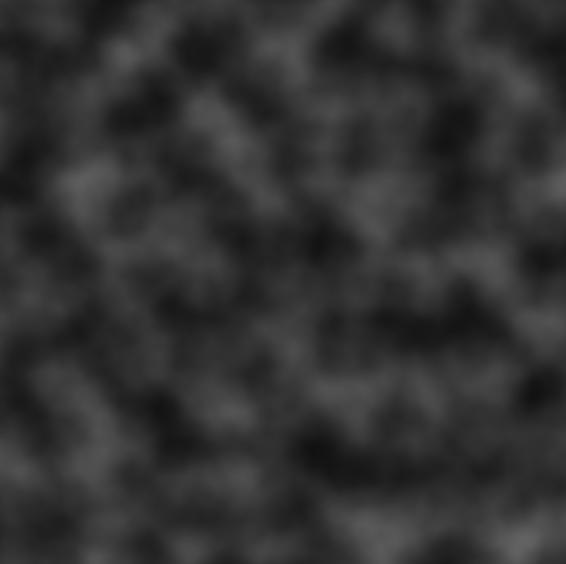

Real-Time Rendering of Heterogeneous Fog in OpenGL
A screen recording of the final fog rendering
Motivation
My primary goal for this project was to render heterogeneous fog, which is a type of fog where the density varies across the scene.
My intention was to find a middle-ground between homogeneous fog, which is applied uniformly across the scene and therefore lacks a sense of realism,
and volumetric fog which appears realistic but is computationally expensive to render.
Description
The heterogeneous fog model augments exponential fog by integrating Perlin turbulence into the
equation, which involves the layering of Perlin noise octaves to achieve a greater amount of detail
and shape than Perlin noise alone. The resulting fog factor is then used to blend the fog’s color
with the scene colors and the result is be presented to the user, along with some tools that will
allow them to interact with the scene to explore the real-time fog rendering.
Objectives
Implement Perlin noise, generating noise octave textures with it
Implement Perlin turbulence by layering the Perlin noise octaves
Compute the fog factor by implementing Perlin turbulence into the exponential fog equation
Create an OpenGL scene and blend the fog color with the scene colors
Add features allowing user to interact with the fog and the scene
Perlin Noise Octaves
4 octaves
8 octaves
16 octaves
32 octaves
Perlin Turbulence

Perlin turbulence samples with different densities, each texture composed of the 4 octaves of Perlin noise shown above
Resources
Perlin, K. (2002, February 16). Improved Noise reference implementation. NYU Media Research Lab. Retrieved April 3, 2023, from https://mrl.cs.nyu.edu/~perlin/noise/
Zdrojewska, D. Real Time Rendering of Heterogeneous Fog Based on the Graphics Hardware Acceleration. Retrieved February 7, 2023, from https://old.cescg.org/CESCG-2004/papers/34_ZdrojewskaDorota.pdf
ocornut. OCORNUT/IMGUI: DEAR IMGUI: Bloat-free graphical user interface for C++ with minimal dependencies. GitHub. Retrieved March 20, 2023, from https://github.com/ocornut/imgui
Learn OpenGL. Retrieved March 18, 2023, from https://learnopengl.com/
Adrian's soapbox. Understanding Perlin Noise. (2014, August 9). Retrieved February 16, 2023, from https://adrianb.io/2014/08/09/perlinnoise.html